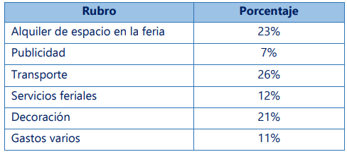

Para ver el contenido de la Semana 3
puede descargar el PDF.
Ver en GitHubDiseñe un programa en Lenguaje Dart que determine el área total (A) y el volumen (V) de un cilindro del que se conoce su radio (r) y su altura (h). Considere las siguientes fórmulas:
A=2πr(r+h)
V=πr2h
Descargar Código
Ver en GitHub
Un padre repartirá una cantidad de dinero entre sus cinco hijos. Cada uno recibirá una cantidad equivalente a:
• Tamar: 85% del monto recibido por Josué
• Josué: 27% de la cantidad a repartir
• Caleb: 23% del monto total recibido entre Josué y Daniel
• Daniel: 25% de la cantidad a repartir
• David: lo que queda del dinero a repartir
Dada la cantidad de dinero a repartir, diseñe un programa en lenguaje Dart que determine cuánto de dinero recibirá cada hijo.
descargar codigo
Ver en GitHub
La empresa “Juanito Import” SAC expondrá sus productos en una feria. La empresa considera que el monto total de dinero a invertir estará distribuido de la siguiente manera:
Dado el monto total de dinero a invertir, implemente un programa que determine cuánto gastará la empresa en cada rubro. diseñe un programa en lenguaje Dart para el proyecto 03
descargar codigo
Ver en GitHub